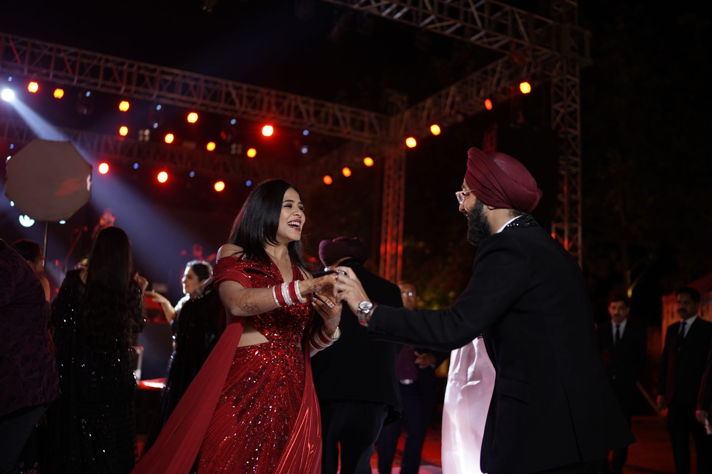
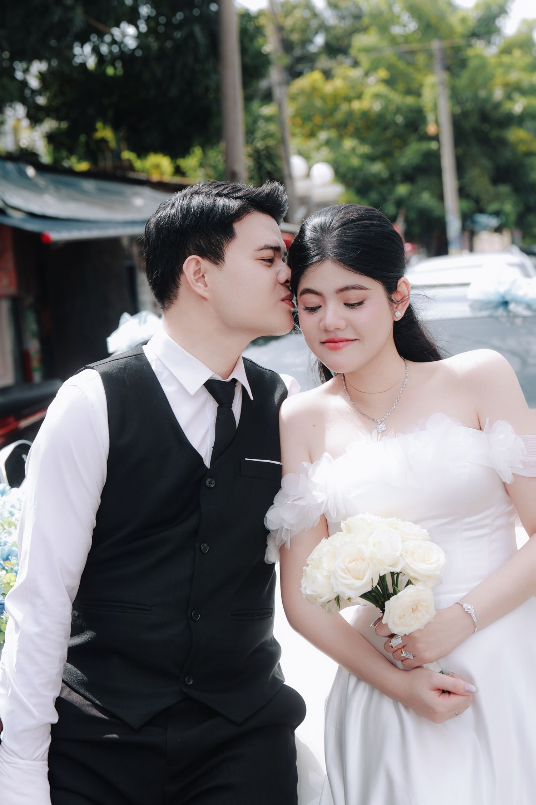
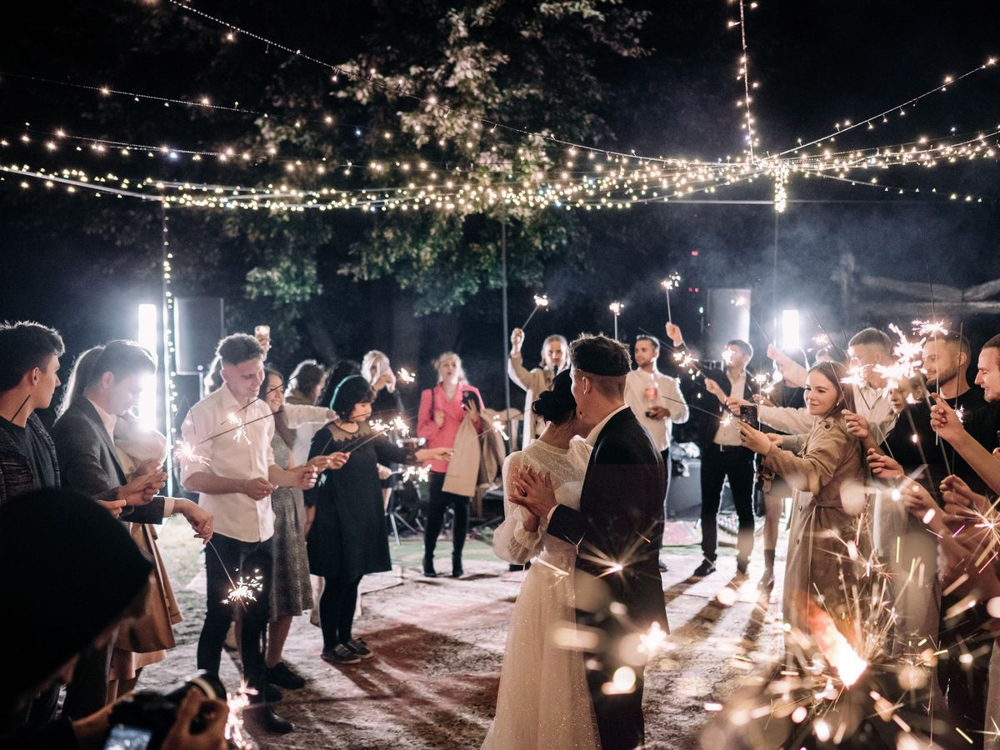

Every part of your story, thoughtfully captured.
From quiet morning glances before the ceremony to heartfelt vows and the joyous energy of the dance floor, we offer individual visual services or seamlessly coordinated photo and cinema collections.

Four specialized disciplines, one cohesive vision.
We work as an integrated visual team. Your photographs and films speak the same aesthetic language, preserving the mood and emotion of your celebration seamlessly.

Documentary Wedding Photography
Anticipating authentic moments, emotional rituals, and unscripted connection with calm direction and zero awkward posing.
- Unobtrusive documentary eye for real laughter and tears
- Family heirlooms and formal portraits handled calmly
- 50–70 Hand-edited high-resolution photos per hour

Cinematic Wedding Films
Moving keepsakes that preserve not just how your day looked, but the real voices, vows, laughter, and atmosphere that made it unforgettable.
- 4K Ultra-HD cinema cameras with multi-track audio
- 3–5 Minute story-driven highlight film with custom music
- Full-length ceremony, speeches, and ritual edits

Pre-Wedding & Engagement Shoots
A relaxed portrait session built around locations, styling, and small rituals that feel natural and unmistakably you.
- 2–3 Hour relaxed session in scenic nature or city architecture
- Wardrobe styling and light timeline guidance
- 50+ High-resolution frames ready for save-the-dates

Drone & Aerial Cinematography
Dynamic bird's-eye views that reveal the grandeur of your venue, surrounding landscapes, and the energy of open-air processions.
- Licensed and certified drone cinematography team
- Grand venue reveals and baraat procession perspectives
- Seamlessly edited into your 4K wedding films
Present enough to notice. Gentle enough to let life happen.
We work with a documentary eye and calm direction. You get considered couple and family portraits when you want them, and space to fully enjoy unscripted moments with your guests in between.
- Emotional Honesty: We look for the proud glance from parents, the stolen touch between vows, and spontaneous joyful tears.
- Thoughtful Family Formals: We organize family portraits quickly and efficiently so you can get back to celebrating.
- Consistent Color Tone: Natural skin tones, warm shadows, and timeless editorial contrast that will never look dated.
Films that bring back the sound, voice, and spirit of your day.
A photograph freezes a moment; a cinematic film lets you hear the quiver in your partner's voice during vows, the applause of your dearest friends, and the roar of laughter across the dinner table.
- Multi-Track Audio Recording: Discreet high-fidelity lapel microphones capture crisp vows and heartfelt toasts.
- Artistic Story-Led Editing: We don't just string clips together to a generic track; we weave speeches, ambient sound, and bespoke music into a narrative keepsake.
- Vertical Reels & Teasers: Formatted for immediate sharing on Instagram, WhatsApp, and social channels.
Get comfortable in front of the lens before the wedding day.
A pre-wedding engagement session is the best way to get to know our team. There is no rush, no guests waiting, and no tight wedding schedule. Just an afternoon exploring a beautiful setting and celebrating your love.
- Tailored Locations: Heritage architecture, misty hillside tea estates, or quiet urban cafes that mean something to you.
- Natural Direction: Easy prompts and movement that help you forget the camera and focus on each other.
- Multi-Use Deliverables: Edited high-res photos delivered in time for invitations, wedding websites, and guestbooks.
Capturing the scale, landscape, and grandeur from above.
Wedding celebrations are often held in breathtaking settings — heritage havelis, coastal resorts, or lush garden estates. Our aerial cinematography captures the full atmosphere and spatial grandeur of your day.
- Certified Pilots: Safe, responsible operation adhering strictly to DGCA and local venue guidelines.
- Procession & Baraat Scale: Dynamic overhead perspectives of musical processions, colorful fireworks, and open-air ceremonies.
- Cinematic 4K Resolution: Perfectly matched in color and frame rate with ground cameras.
Note: Aerial coverage is always subject to local airspace clearances and safe weather conditions.
The finishing touches designed to last generations.
Great wedding coverage doesn't stop when the cameras are packed away. Our bespoke post-production and heirloom keepsakes ensure your memories endure.

Bespoke Color Finishing
Every frame is individually color-graded and exposure-balanced to create a harmonious, editorial collection that feels like fine art.

Heirloom Wedding Albums
Artisanal flush-mount albums handcrafted with archival layflat pages, Italian leather or Japanese linen covers, and custom gold foil debossing.

Short-Form & Social Edits
9:16 vertical reels and teaser clips optimized for mobile viewing and instant sharing with distant friends and family.
Ready to shape your wedding coverage?
Explore our transparent collections or request a personalized proposal for your celebration.